Code
set.seed(1234)
train_size <- 0.80 * nrow(bdiag)
train_ind <- sample(seq_len(nrow(bdiag)),
size = train_size)
train <- bdiag[train_ind, ]
test <- bdiag[-train_ind, ]In the previous chapters, the outcome variable was always continuous: body fat percentage, CWD basal area, and so on. In many problems, however, the outcome is a categorical variable. For example, we might want to figure out whether a genetic mutation is deleterious (yes/no) based on DNA sequencing data, predict the outcome of surgery (success/failure) for patients with ovarian cancer based on patient characteristics, or classify iris varieties given the dimensions of their leaves. These problems are examples of classification problems, and they require different techniques than the regression methods we have seen so far.
There are many techniques for classification, including logistic regression, K-nearest neighbors, linear discriminant analysis, support vector classification, decision trees, and neural networks, each with their own advantages and disadvantages. In this chapter, we will focus on logistic regression and K-nearest neighbors (KNN). The main reference for this chapter is An Introduction to Statistical Learning (James et al. (2021), sections 4.1–4.3).
Throughout this chapter, we will use the Wisconsin breast cancer diagnostic dataset (bdiag), described in Street, Wolberg, and Mangasarian (1993). This dataset contains measurements on cell nuclei from 569 tumor samples, each classified as either malignant (M) or benign (B). The features we will use are the mean radius of the cell nucleus and the texture, defined as the variance of gray-scale values in the cell image.
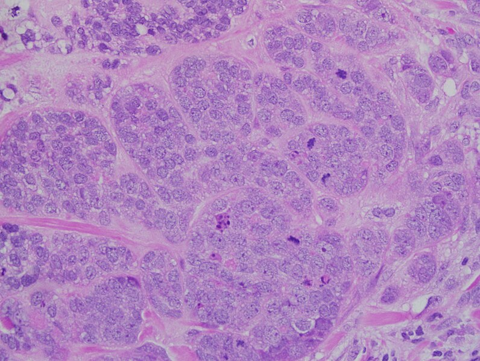
We split the dataset into a training set (80% of the data) and a test set (20%), so that we can later evaluate how well our models generalize to unseen data.
set.seed(1234)
train_size <- 0.80 * nrow(bdiag)
train_ind <- sample(seq_len(nrow(bdiag)),
size = train_size)
train <- bdiag[train_ind, ]
test <- bdiag[-train_ind, ]A first look at the data reveals that malignant tumors tend to have a larger mean radius and a somewhat higher texture than benign tumors, though the two classes overlap considerably.
p_scatter <- ggplot(train,
aes(x = radius_mean, y = texture_mean, color = diagnosis)) +
geom_jitter() +
theme(legend.position = "top")
p_box_radius <- ggplot(train,
aes(y = radius_mean, x = diagnosis, fill = diagnosis)) +
geom_boxplot(show.legend = FALSE) +
ggtitle("radius") + xlab("") + ylab(NULL)
p_box_texture <- ggplot(train,
aes(y = texture_mean, x = diagnosis, fill = diagnosis)) +
geom_boxplot(show.legend = FALSE) +
ggtitle("texture") + xlab("") + ylab(NULL)
grid.arrange(p_scatter, p_box_radius, p_box_texture, nrow = 1, widths = c(2, 1, 1))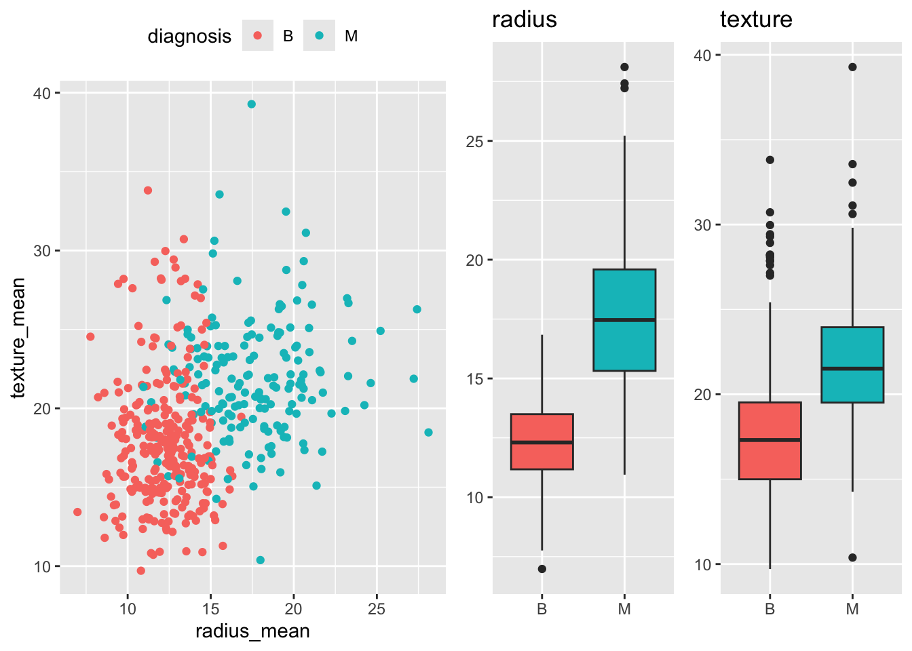
Before turning to logistic regression, we consider a simpler classification method: K-nearest neighbors (KNN). The idea is straightforward: to classify a new observation \(x\), find the \(K\) nearest data points in the training set and assign \(x\) to the class that is most common among those neighbors.
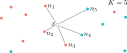
More precisely, KNN estimates the probability that \(x\) belongs to class \(y\) as \[ P(Y = y \mid X = x) = \frac{1}{K} \sum_{i = 1}^{K} I(y_i = y), \] where the sum is over the \(K\) data points \(y_1, \ldots, y_K\) that are nearest to \(x\), and \(I(y_i = y)\) equals 1 if \(y_i = y\) and 0 otherwise. For example, in Figure 5.3, with \(K = 5\) neighbors, the estimated probabilities are \(P(Y = B \mid X = x) = 3/5 = 60\%\) and \(P(Y = M \mid X = x) = 2/5 = 40\%\).
KNN has a number of attractive properties: it requires no explicit training phase, is robust to outliers, and can easily handle more than two classes. On the other hand, it is not very interpretable: it is hard to understand why a particular classification was made. KNN also tends to be relatively memory-intensive, since all training data must be stored in memory when making predictions.
The plot below shows the decision boundary for a KNN classifier with \(K = 5\) on the breast cancer dataset. The background color indicates the predicted class at each point, with the intensity reflecting the confidence of the prediction. The points of the decision boundary have equal probability of belonging to either class.
model_knn_5 <- knn3(diagnosis ~ radius_mean + texture_mean, data = train, k = 5)
model <- model_knn_5
data <- train
n <- 100
n_classes <- 2
xgrid <- with(data, expand_grid(
radius_mean = seq(0.95 * min(radius_mean), 1.05 * max(radius_mean), length.out = n),
texture_mean = seq(0.95 * min(texture_mean), 1.05 * max(texture_mean), length.out = n)))
y_class_probs <- predict(model, newdata = xgrid, type = "prob")
y_max_prob <- apply(y_class_probs, 1, max)
y_max_i <- apply(y_class_probs, 1, which.max)
bg_cols <- hue_pal()(n_classes)
ggplot(xgrid, aes(x = radius_mean, y = texture_mean)) +
geom_raster(aes(fill = y_max_i), alpha = y_max_prob) +
scale_fill_gradientn(colours=bg_cols,
breaks = c(1, 2)) +
geom_point(data = data, aes(x = radius_mean, y = texture_mean, fill = as.numeric(diagnosis)),
pch = 21, color = "black", size = 2, alpha = 1) +
scale_x_continuous(expand = c(0, 0)) +
scale_y_continuous(expand = c(0, 0)) +
theme(legend.position = "none")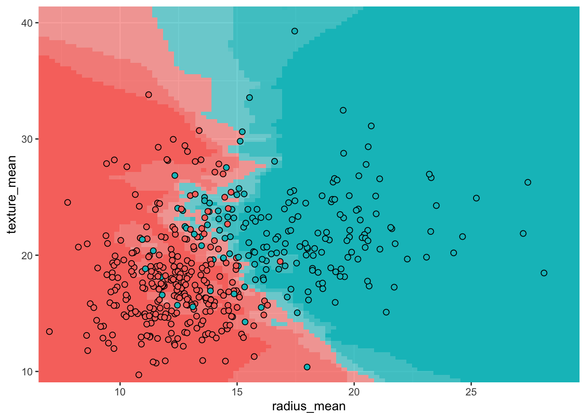
Before we can develop logistic regression, we need to introduce a general method for estimating the parameters of a statistical model: maximum likelihood estimation (MLE). The core idea is to find the parameter values that make the observed data most likely to occur. MLE is used in many settings, including finding the mean and variance of a normal distribution and determining regression coefficients.
Suppose we have \(n\) independent observations \(y_1, \ldots, y_n\) drawn from a distribution \(\mathcal{D}\) with unknown parameter(s) \(\theta\). The likelihood function is defined as the probability of observing the data, viewed as a function of the parameters: \[ \mathcal{L}(\theta) = P(y_1, \ldots, y_n \mid \theta) = P(y_1 \mid \theta) \cdots P(y_n \mid \theta). \tag{5.1}\] The second equality follows from the assumption that the observations are independent. In practice, it is often more convenient to work with the log-likelihood: \[ \ell(\theta) = \ln \mathcal{L}(\theta) = \sum_{i=1}^n \ln P(y_i \mid \theta). \tag{5.2}\] Since the logarithm is a monotonically increasing function, maximizing the log-likelihood is equivalent to maximizing the likelihood itself.
To find the maximum likelihood estimate \(\hat{\theta}\), we set the partial derivatives of the log-likelihood to zero and solve for \(\theta\): \[ \frac{\partial \ell}{\partial \theta}(\hat{\theta}) = 0. \] Sometimes this equation can be solved analytically; most of the time, however, numerical methods are required.
As an illustration, suppose we have \(n\) observations from a binomial distribution with unknown probability \(\pi = P(Y = 1)\): \[ Y = (0, 0, 1, 0, 1, 0, \ldots, 1, 1, 0, 0, 1). \] The likelihood is given by \[ \mathcal{L}(\pi) = \prod_{i = 1}^n P(Y = y_i) = \pi^{n\bar{Y}} (1 - \pi)^{n(1 - \bar{Y})}, \tag{5.3}\] where \(\bar{Y}\) denotes the sample mean. The log-likelihood is \[ \ell(\pi) = n \bar{Y} \ln \pi + n(1-\bar{Y})\ln(1 - \pi). \] Setting the derivative to zero gives \[ \frac{d \ell}{d \pi} = \frac{n \bar{Y}}{\pi} - \frac{n(1 - \bar{Y})}{1 - \pi} = 0, \] which simplifies to \(\hat{\pi} = \bar{Y}\). In other words, the maximum likelihood estimate for the probability of success is simply the proportion of successes in the data. We already knew this from semester 1, but it’s reassuring that this new method gives the same result.
Fill in the missing steps to show that the second equality in Equation 5.3 holds.
Before introducing logistic regression, it is helpful to define a few quantities that will appear throughout.
If \(\pi\) is the probability of some event (say, having a malignant tumor), then the odds are defined as \[ \text{Odds} = \frac{\pi}{1 - \pi}. \] For example, if \(\pi = 0.8\) then the odds are \(0.8/0.2 = 4\), meaning that for every benign tumor there are 4 malignant ones (on average). Odds range from 0 (impossible event) to \(+\infty\) (almost certain event).
The odds ratio (OR) indicates by how much the odds change between two groups or treatments. For instance, suppose that in the treatment group the probability of a malignant tumor drops to \(\pi_T = 0.75\), compared to \(\pi_C = 0.8\) in the untreated group. Then \[ \text{OR} = \frac{\text{Odds}(T)}{\text{Odds}(C)} = \frac{0.75/0.25}{0.8/0.2} = \frac{3}{4} = 0.75. \] An odds ratio less than 1 indicates that the odds decrease for the first group relative to the second; an odds ratio greater than 1 indicates that the odds increase.
Often it is convenient to work with the logarithm of the odds, known as the logit: \[ \text{logit}(\pi) = \ln \text{Odds} = \ln \left( \frac{\pi}{1 - \pi} \right). \] The logit transformation maps probabilities from the interval \([0, 1]\) to the entire real line: \(\text{logit} \to -\infty\) as \(\pi \to 0\) and \(\text{logit} \to +\infty\) as \(\pi \to 1\). To convert back from logits to probabilities, we use the logistic function (also called the inverse logit): \[ \pi = \frac{1}{1 + e^{-\text{logit}}}. \tag{5.4}\]
ggplot(tibble(x = seq(-5, 5, length.out = 100)), aes(x)) +
geom_function(fun = plogis) +
xlab("Logit") +
ylab("Probability")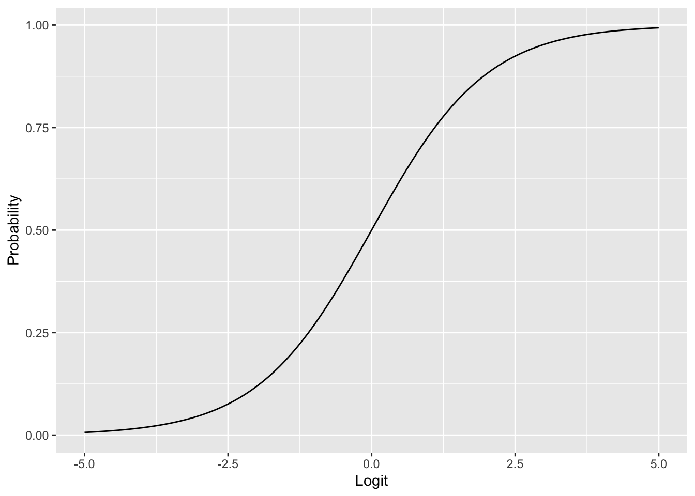
Suppose we want to predict whether a tumor is malignant (\(Y = 1\)) or benign (\(Y = 0\)) based on a single predictor \(X\) (say, radius_mean). We model \(Y_i\) as a Bernoulli random variable with probability \(\pi(X_i)\), and we need to determine how \(\pi(X)\) depends on \(X\).
A first idea would be to use linear regression, assuming \(\pi(X) = \alpha + \beta X\) and estimating \(\alpha\) and \(\beta\) by ordinary least squares.
ggplot(train, aes(x = radius_mean, y = diagnosis_binary)) +
geom_point(aes(color = diagnosis)) +
stat_smooth(method="lm", se=FALSE, color = "gray40") +
ylab("Probability")`geom_smooth()` using formula = 'y ~ x'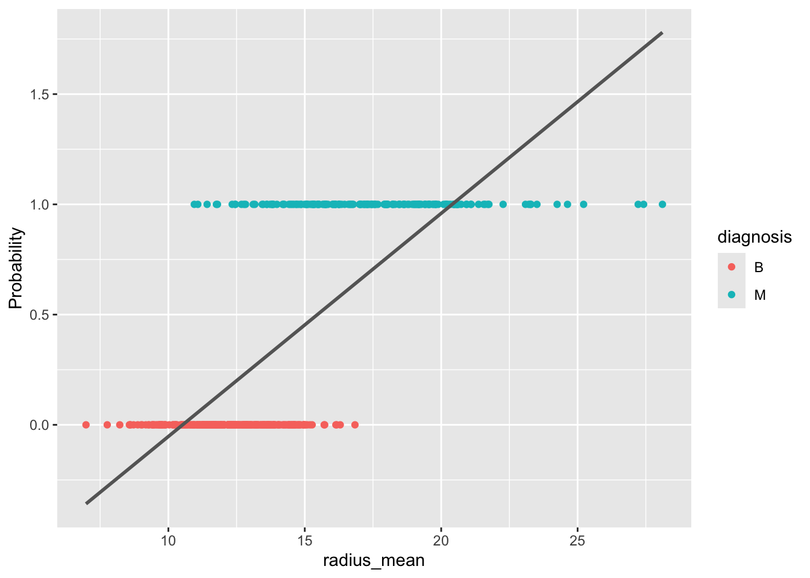
As Figure 5.6 shows, this approach has problems: the fitted probabilities can take on values outside the interval \([0, 1]\), which makes no sense for a probability. Moreover, the linear model does not easily generalize to more than two classes.
A better approach is to let \(\pi(X)\) depend on \(X\) through the logistic function (Equation 5.4): \[ \pi(X) = \frac{1}{1 + \exp(-(\alpha + \beta X))}. \tag{5.5}\] This is a nonlinear model in the parameters \(\alpha\) and \(\beta\), but it guarantees that the predicted probabilities lie between 0 and 1. Equivalently, we can apply the logit transformation to obtain a model that is linear in the logits: \[ \text{logit}(\pi) = \alpha + \beta X. \]
The parameters \(\alpha\) and \(\beta\) are estimated using maximum likelihood, as described in Section 5.3. Recall that te likelihood function is the probability of observing the data given the parameters: \[ \mathcal{L}(\alpha, \beta) = \prod_{i = 1}^n P(Y = Y_i \mid X = X_i), \] where \[ P(Y = Y_i \mid X = X_i) = \pi(X_i)^{Y_i}(1 - \pi(X_i))^{1 - Y_i} \] is the probability of observing a single data point \((X_i, Y_i)\). In practice, we work with the log-likelihood \(\ell(\alpha, \beta) = \ln \mathcal{L}(\alpha, \beta)\).
The maximum likelihood estimates are found by setting the partial derivatives (score functions) equal to zero: \[
\frac{\partial \ell}{\partial \alpha} = 0, \quad
\frac{\partial \ell}{\partial \beta} = 0.
\] Unlike in linear regression, these equations cannot be solved analytically. Numerical optimization methods are used instead, which R handles automatically through the glm command.
m_simple <- glm(diagnosis ~ radius_mean, data = train, family = "binomial")
summary(m_simple)
Call:
glm(formula = diagnosis ~ radius_mean, family = "binomial", data = train)
Coefficients:
Estimate Std. Error z value Pr(>|z|)
(Intercept) -15.8086 1.5310 -10.326 <2e-16 ***
radius_mean 1.0662 0.1066 9.998 <2e-16 ***
---
Signif. codes: 0 '***' 0.001 '**' 0.01 '*' 0.05 '.' 0.1 ' ' 1
(Dispersion parameter for binomial family taken to be 1)
Null deviance: 604.40 on 454 degrees of freedom
Residual deviance: 256.54 on 453 degrees of freedom
AIC: 260.54
Number of Fisher Scoring iterations: 6Note that you must specify family = "binomial" in the call to glm. If you omit this parameter, R will silently fit a different, inappropriate model.
Given that we have only two parameters, it is also instructive to look at the graph of the log-likelihood as a surface in 3D. Minima on this surface correspond to the maximum likelihood estimate \((\hat{\alpha}, \hat{\beta})\). Note that there is a unique minimum. This is a consequence of the fact that the log-likelihood function is convex.
log_lh <- function(x, y, alpha, beta) {
lp <- alpha + beta * x
px <- 1 / (1 + exp(-lp))
llh <- log(px)
llh[y == 0] <- log(1 - px[y == 0])
sum(llh)
}
alpha <- seq(-20, -10, length.out = 20)
beta <- seq(0, 2, length.out = 20)
x <- train$radius_mean
y <- train$diagnosis_binary
llh <- matrix(nrow = length(alpha), ncol = length(beta))
for (i in seq_along(alpha)) {
for (j in seq_along(beta)) {
llh[i, j] <- log_lh(x, y, alpha[[i]], beta[[j]])
}
}
filled.contour(alpha, beta, llh,
xlab = "alpha",
ylab = "beta",
plot.axes = {
axis(1)
axis(2)
points(-15.8086, 1.0662, pch = "x", cex = 2, col = "white")
})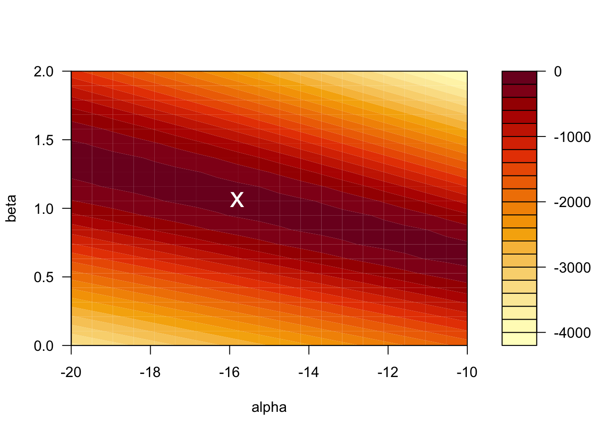
The value of the log-likelihood at the MLE is \(\ell = -128.2701\). R reports the residual deviance, which is \(D = -2 \times \ell = 256.54\).
Just as in linear regression, the outcome \(Y\) is often influenced by several predictors \(X_1, X_2, \ldots, X_p\). For example, the diagnosis may depend on both radius_mean and texture_mean: \[
\text{logit}(\pi) =
\alpha +
\beta_1 \cdot \mathtt{radius\_mean} +
\beta_2 \cdot \mathtt{texture\_mean}.
\] The parameters \(\alpha, \beta_1, \ldots, \beta_p\) are again determined through maximum likelihood estimation.
m_multi <- glm(diagnosis ~ radius_mean + texture_mean,
data = train, family = "binomial")
summary(m_multi)
Call:
glm(formula = diagnosis ~ radius_mean + texture_mean, family = "binomial",
data = train)
Coefficients:
Estimate Std. Error z value Pr(>|z|)
(Intercept) -20.51694 2.04729 -10.021 < 2e-16 ***
radius_mean 1.09536 0.11727 9.341 < 2e-16 ***
texture_mean 0.21749 0.04034 5.391 7.01e-08 ***
---
Signif. codes: 0 '***' 0.001 '**' 0.01 '*' 0.05 '.' 0.1 ' ' 1
(Dispersion parameter for binomial family taken to be 1)
Null deviance: 604.40 on 454 degrees of freedom
Residual deviance: 223.68 on 452 degrees of freedom
AIC: 229.68
Number of Fisher Scoring iterations: 7We can also include interaction terms between variables. For the breast cancer dataset, including an interaction between radius and texture gives the following:
m_inter <- glm(diagnosis ~ radius_mean * texture_mean,
data = train, family = "binomial")
summary(m_inter)
Call:
glm(formula = diagnosis ~ radius_mean * texture_mean, family = "binomial",
data = train)
Coefficients:
Estimate Std. Error z value Pr(>|z|)
(Intercept) -8.30457 7.45536 -1.114 0.2653
radius_mean 0.21824 0.52876 0.413 0.6798
texture_mean -0.41329 0.38547 -1.072 0.2836
radius_mean:texture_mean 0.04552 0.02764 1.647 0.0995 .
---
Signif. codes: 0 '***' 0.001 '**' 0.01 '*' 0.05 '.' 0.1 ' ' 1
(Dispersion parameter for binomial family taken to be 1)
Null deviance: 604.40 on 454 degrees of freedom
Residual deviance: 220.72 on 451 degrees of freedom
AIC: 228.72
Number of Fisher Scoring iterations: 7Once we have a fitted logistic regression model, we can use it to predict the probability that a new observation belongs to the positive class. For instance, what is the probability that a tumor with a radius of 13 mm is malignant? Using the simple model with radius_mean as the only predictor, we compute \[
\pi(\mathtt{radius\_mean} = 13)
= \frac{1}{1 + \exp(15.8086 - 1.0662 \times 13)}
= 0.125.
\]
In R, we can compute this prediction directly:
predict(m_simple,
newdata = data.frame(radius_mean = 13),
type = "response") 1
0.1247961 To compute a confidence interval for the predicted probability, we proceed in three steps:
type = "link").plogis function (which computes the logistic function Equation 5.4).# Step 1: Prediction on the logit scale
pred <- predict(m_simple,
newdata = data.frame(radius_mean = 13),
type = "link", se.fit = TRUE)
# Step 2: CI on the logit scale
ci_logits <- c(pred$fit - 1.96 * pred$se.fit,
pred$fit + 1.96 * pred$se.fit)
ci_logits 1 1
-2.358216 -1.537335 # Step 3: CI on the probability scale
ci_probs <- c(plogis(ci_logits[1]), plogis(ci_logits[2]))
ci_probs 1 1
0.08641491 0.17692307 # Original prediction on the probability scale
plogis(pred$fit) 1
0.1247961 The predicted probability that a tumor of radius 13 mm is malignant is 12.5% (95% CI: [8.6%, 17.7%]).
With R, we don’t have to limit ourselves to making single predictions at a time. We can make predictions for a range of values of radius_mean, and plot these predictions as a function of the input variable. This gives a so-called prediction plot, which is often a useful diagnostic for logistic regression models with one predictor.
ggplot(train, aes(x = radius_mean, y = diagnosis_binary)) +
geom_vline(xintercept = 13, linetype = "dashed", color = "gray60") +
geom_hline(yintercept = 0.1247961, linetype = "dashed", color = "gray60") +
geom_point(aes(color = diagnosis)) +
stat_smooth(method="glm", se=FALSE, color = "gray40",
method.args = list(family=binomial))`geom_smooth()` using formula = 'y ~ x'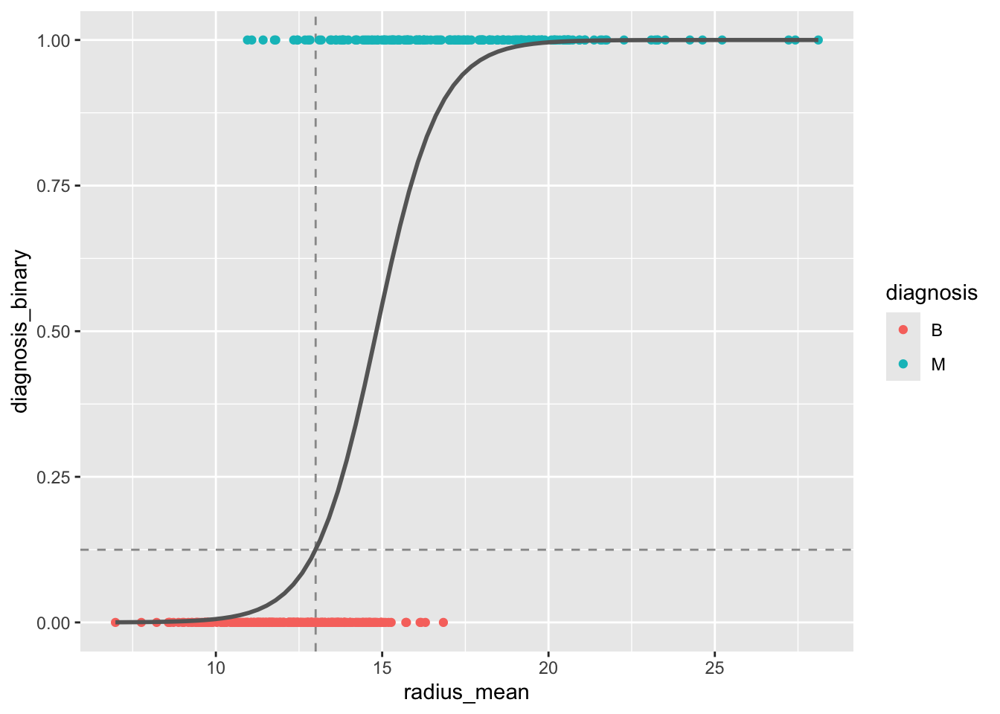
radius_mean as predictor. The dashed lines indicate the predicted probability for a tumor with radius 13 mm.
The logistic regression model can be written in terms of odds as \[ \text{logit}(\pi) = \ln \text{Odds} = \alpha + \beta X. \] From this it follows that \[ e^\beta = \frac{\text{Odds}(X + 1)}{\text{Odds}(X)}. \] In other words, \(e^\beta\) is the odds ratio associated with a 1-unit increase in \(X\).
For the simple model, \(\beta = 1.0662\), so \(\text{OR} = \exp(1.0662) = 2.90\). An increase of 1 mm in tumor radius is associated with odds that are 2.90 times higher.
A \((1 - \alpha) \times 100\%\) confidence interval for the odds ratio is given by \[ \exp\left( \hat{\beta} \pm z_{1 - \alpha/2} \cdot SE(\beta) \right). \]
The 95% confidence interval for \(\text{OR}_{\mathtt{radius\_mean}}\) in the multiple model is \[ \exp(1.095 \pm 1.96 \times 0.117) = [\exp(0.866), \exp(1.324)] = [2.377, 3.759]. \]
A Wald-type approximate \((1 - \alpha) \times 100\%\) confidence interval for a regression coefficient \(\beta\) is given by \[ \hat{\beta} \pm z_{1 - \alpha/2} \cdot SE(\beta). \]
The 95% confidence interval for \(\beta_{\mathtt{radius\_mean}}\) in the multiple model is \[ 1.095 \pm 1.96 \times 0.117 = [0.866, 1.324]. \]
In R, confidence intervals can be computed using the confint function, which uses the profile likelihood method (slightly different from the Wald method, but generally preferred):
confint(m_multi)Waiting for profiling to be done... 2.5 % 97.5 %
(Intercept) -24.8846042 -16.8233485
radius_mean 0.8840034 1.3456187
texture_mean 0.1405734 0.2993915To test whether a model coefficient \(\beta\) is significantly different from zero, the Wald test uses the test statistic \[ z = \frac{\hat{\beta}}{SE(\beta)}, \] which follows a standard normal distribution under the null hypothesis \(H_0: \beta = 0\). This test is reported directly in the R regression output:
summary(m_multi)
Call:
glm(formula = diagnosis ~ radius_mean + texture_mean, family = "binomial",
data = train)
Coefficients:
Estimate Std. Error z value Pr(>|z|)
(Intercept) -20.51694 2.04729 -10.021 < 2e-16 ***
radius_mean 1.09536 0.11727 9.341 < 2e-16 ***
texture_mean 0.21749 0.04034 5.391 7.01e-08 ***
---
Signif. codes: 0 '***' 0.001 '**' 0.01 '*' 0.05 '.' 0.1 ' ' 1
(Dispersion parameter for binomial family taken to be 1)
Null deviance: 604.40 on 454 degrees of freedom
Residual deviance: 223.68 on 452 degrees of freedom
AIC: 229.68
Number of Fisher Scoring iterations: 7The likelihood ratio test is useful for comparing nested models and generally has more power than the Wald test. To test the null hypothesis that a simpler model is equivalent to a more complex one, we compute the deviance: \[ D = -2 \ln \frac{\mathcal{L}(\text{simple})}{\mathcal{L}(\text{complex})} = -2 \ell(\text{simple}) + 2 \ell(\text{complex}). \] Under \(H_0\), \(D\) follows a \(\chi^2_k\) distribution, where \(k\) is the number of extra parameters in the complex model.
Consider the simple model (with radius_mean only) and the complex model (with both radius_mean and texture_mean). From the R output:
Hence \(D = 256.54 - 223.68 = 32.86 > 3.841 = \chi^2_{1; 0.95}\). We reject \(H_0\) at the 5% significance level and conclude that the complex model is significantly better.
In R, the likelihood ratio test is performed using the anova command:
anova(m_simple, m_multi, test = "Chisq")Analysis of Deviance Table
Model 1: diagnosis ~ radius_mean
Model 2: diagnosis ~ radius_mean + texture_mean
Resid. Df Resid. Dev Df Deviance Pr(>Chi)
1 453 256.54
2 452 223.68 1 32.864 9.882e-09 ***
---
Signif. codes: 0 '***' 0.001 '**' 0.01 '*' 0.05 '.' 0.1 ' ' 1The test can also be used to compare models that differ by more than one variable. For example, we can test whether adding concavity_mean and symmetry_mean to the model with radius_mean and texture_mean leads to a significant improvement:
m_multi_4 <- glm(diagnosis ~ radius_mean + texture_mean + concavity_mean + symmetry_mean,
data = train, family = "binomial")
anova(m_multi, m_multi_4, test = "Chisq")Analysis of Deviance Table
Model 1: diagnosis ~ radius_mean + texture_mean
Model 2: diagnosis ~ radius_mean + texture_mean + concavity_mean + symmetry_mean
Resid. Df Resid. Dev Df Deviance Pr(>Chi)
1 452 223.68
2 450 129.99 2 93.686 < 2.2e-16 ***
---
Signif. codes: 0 '***' 0.001 '**' 0.01 '*' 0.05 '.' 0.1 ' ' 1The deviance should be compared with the critical value \(\chi^2_{2; 0.95} = 5.991\) to draw a conclusion. R does that for us through the test = "Chisq" argument.
In this section we will talk about negative observations (for which the outcome is \(Y = 0\)) and positive observations (\(Y = 1\)). When considering a concrete example, for example the breast cancer dataset, where we classify tumors as benign or malignant, it is important to be clear about which class corresponds to the positive/negative label. We will use the convention that a malignant tumor corresponds to the positive class while a benign tumor corresponds to the negative class.
Once we have a logistic regression model for \(\pi(X)\), we can use it to classify new observations as negative (\(Y = 0\)) or positive (\(Y = 1\)) by comparing \(\pi(X)\) with a fixed threshold \(C\): \[ Y = 1 \quad \text{if } \pi(X) > C, \quad \text{otherwise } Y = 0. \] The performance of the classifier depends on the choice of \(C\).
We computed earlier that \(\pi(\mathtt{radius\_mean} = 13) = 0.12\). If the threshold for classifying a sample as malignant is \(C = 0.5\), this sample would be classified as benign.
For a model without interaction terms, the decision boundary is a straight line in the feature space. When interaction terms are included, the decision boundary becomes curved.
plot_decision_boundary <- function(model, data, n = 100, n_classes = 2, title = NULL) {
xgrid <- with(data, expand_grid(
radius_mean = seq(0.95 * min(radius_mean), 1.05 * max(radius_mean), length.out = n),
texture_mean = seq(0.95 * min(texture_mean), 1.05 * max(texture_mean), length.out = n)))
y_response <- predict(model, newdata = xgrid, type = "response")
y_class_probs <- cbind(1 - y_response, y_response)
colnames(y_class_probs) <- c("B", "M")
y_max_prob <- apply(y_class_probs, 1, max)
y_max_i <- apply(y_class_probs, 1, which.max)
bg_cols <- hue_pal()(n_classes)
ggplot(xgrid, aes(x = radius_mean, y = texture_mean)) +
geom_raster(aes(fill = y_max_i), alpha = y_max_prob) +
scale_fill_gradientn(colours=bg_cols,
breaks = c(1, 2)) +
geom_point(data = data, aes(x = radius_mean, y = texture_mean, fill = as.numeric(diagnosis)),
pch = 21, color = "black", size = 2, alpha = 1) +
scale_x_continuous(expand = c(0, 0)) +
scale_y_continuous(expand = c(0, 0)) +
theme(legend.position = "none") +
ggtitle(title)
}
p1 <- plot_decision_boundary(m_multi, train, title = "No interaction")
p2 <- plot_decision_boundary(m_inter, train, title = "Interaction")
grid.arrange(p1, p2, nrow = 1)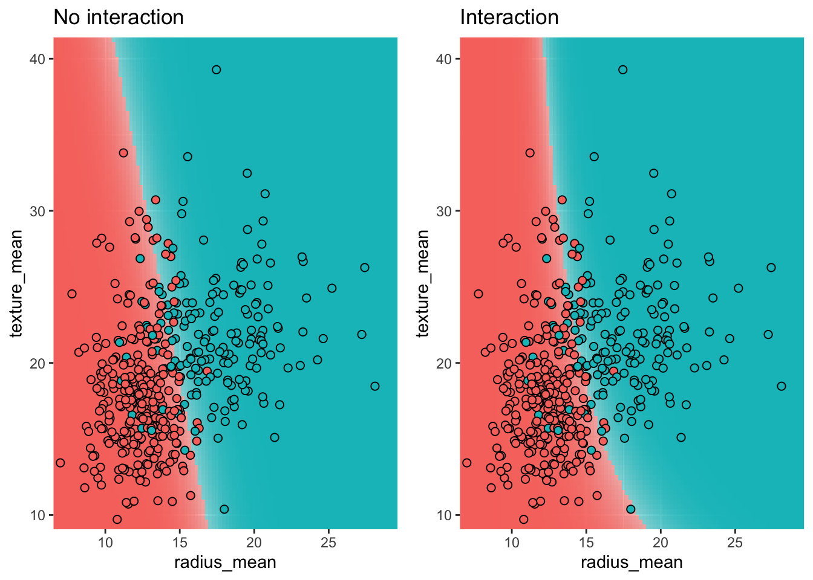
By comparing the labels assigned by our model with the actual labels, we can evaluate the performance of the classifier. The results are summarized in a confusion matrix.
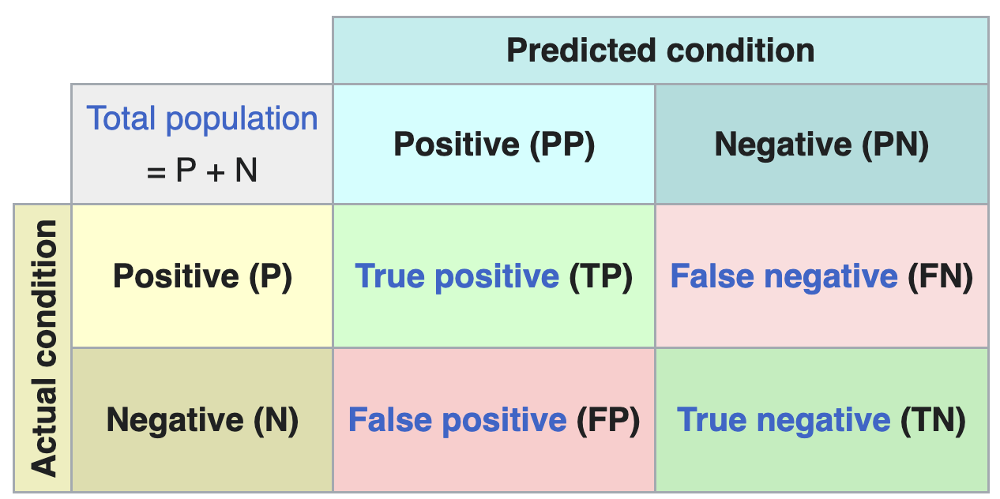
From the confusion matrix, several performance metrics can be derived:
| Name | Definition |
|---|---|
| Accuracy | (TP + TN) / (P + N) |
| Sensitivity (recall) | TP / P |
| Specificity | TN / N |
| PPV (precision) | TP / PP |
| NPV | TN / PN |
Which metric is most relevant depends on the problem at hand. Metrics can also give surprising results in the case of unbalanced data, where one class is much more frequent than the other.
In R, the confusion matrix and associated metrics can be computed using the confusionMatrix function from the caret package:
pred_test <- predict(m_simple, test, type="response")
class_test <- ifelse(pred_test >= 0.2, "M", "B")
conf_matrix <- confusionMatrix(as.factor(class_test), test$diagnosis, positive = "M")
print(conf_matrix)Confusion Matrix and Statistics
Reference
Prediction B M
B 64 6
M 11 33
Accuracy : 0.8509
95% CI : (0.772, 0.9107)
No Information Rate : 0.6579
P-Value [Acc > NIR] : 3.039e-06
Kappa : 0.6786
Mcnemar's Test P-Value : 0.332
Sensitivity : 0.8462
Specificity : 0.8533
Pos Pred Value : 0.7500
Neg Pred Value : 0.9143
Prevalence : 0.3421
Detection Rate : 0.2895
Detection Prevalence : 0.3860
Balanced Accuracy : 0.8497
'Positive' Class : M
The choice of threshold \(C\) determines the trade-off between sensitivity and specificity and is problem-specific. In a diagnostic test, we typically want high sensitivity (we don’t want to tell patients with a tumor that they are healthy), which means choosing a low threshold. In a spam filter, on the other hand, we want high specificity (we don’t want to put regular email in the spam folder), which calls for a high threshold.
When the threshold is \(C = 0.5\), the sensitivity is 26/39 = 0.67 and the specificity is 70/75 = 0.93.
| Actual B | Actual M | |
|---|---|---|
| Predicted B | 70 | 13 |
| Predicted M | 5 | 26 |
When we lower the threshold to \(C = 0.2\), we become less discriminating in what we call a malignant tumor. Consequently we catch more actual tumors (true positives increases from 26 to 33) but we also classify a few more benign tumors as malign (false positives goes from 5 to 11, and true negatives decreases from 70 to 64). This is reflected in the sensitivity, which increases to 33/39 = 0.85, while the specificity decreases to 64/75 = 0.85.
| Actual B | Actual M | |
|---|---|---|
| Predicted B | 64 | 6 |
| Predicted M | 11 | 33 |
Convince yourself that when the number of false positives (FP) decreases, the number of true negatives (TN) must necessarily increase, and vice versa.
The plot below shows how sensitivity and specificity change as the threshold varies from 0 to 1. As the threshold increases, sensitivity decreases (fewer true positives) while specificity increases (fewer false positives).
pred_test <- predict(m_simple, test, type="response")
se_sp_for_C <- function(C) {
class_test <- ifelse(pred_test >= C, "M", "B")
conf_matrix <- confusionMatrix(as.factor(class_test), test$diagnosis, positive = "M")
tibble(C = C,
se = conf_matrix[["byClass"]][["Sensitivity"]],
sp = conf_matrix[["byClass"]][["Specificity"]])
}
se_sp_curves <- seq(0, 1, length.out = 50) |>
map(se_sp_for_C) |>
list_rbind()
se_sp_curves |>
reshape2::melt(id.var = "C") |>
ggplot(aes(x = C, y = value, color = variable)) +
geom_line() +
xlab("C (Threshold)") +
ylab(NULL) +
scale_color_hue(labels = c(se = "Sensitivity", sp = "Specificity"), name = NULL)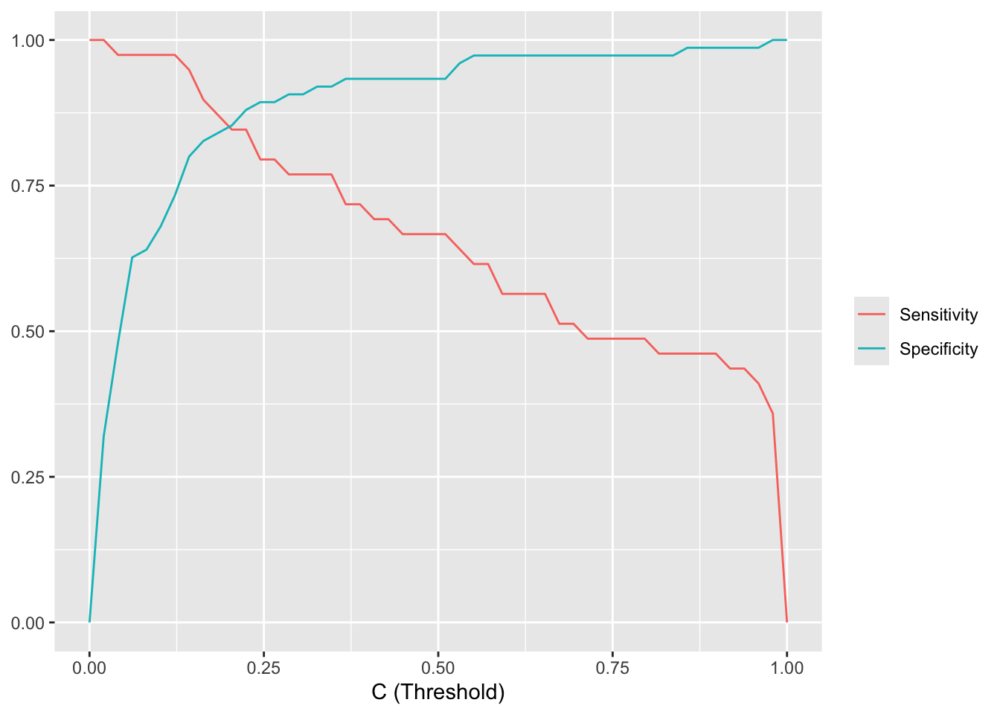
Rather than plotting the sensitivity and specificity as a function of the threshold \(C\), we can make a special plot where specificity is on the x-axis and sensitivity on the y-axis. By varying \(C\) from 0 to 1, sensitivity and specificity then trace out the Receiver Operating Characteristic (ROC) curve. The closer the ROC curve sticks to the upper left corner, the better the classifier performs. The ROC curve can also be used to compare different classifiers.
pred_test_logis <- predict(m_simple, test, type="response")
roc_logis <- roc(test$diagnosis_binary, pred_test_logis)
pred_test_knn <- predict(model_knn_5, newdata = test, type = "prob")[, 2]
roc_knn <- roc(test$diagnosis_binary, pred_test_knn)
ggroc(list(knn=roc_knn, logis=roc_logis)) +
scale_color_hue(labels = c(knn = "KNN", logis = "Logistic regression"), name = NULL)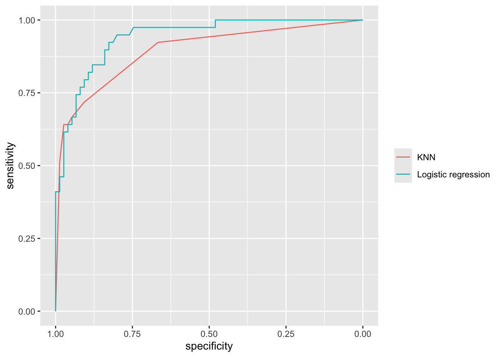
The performance of a classifier can be summarized by a single number: the Area Under the ROC Curve (AUC). An AUC of 1.0 means the classifier distinguishes perfectly between the two classes, while an AUC of 0.5 means the classifier is no better than random guessing.
The AUC has an intuitive interpretation as the concordance probability: the probability that the classifier will assign a lower predicted probability to a randomly chosen negative sample than to a randomly chosen positive sample: \[ \text{AUC} = P(\pi(x_{\text{neg}}) \le \pi(x_{\text{pos}})). \] This makes the AUC useful for model calibration: even if we don’t care about the absolute value of \(\pi\), we want negative samples to consistently receive lower predicted probabilities than positive samples.
The ROC curve and AUC are frequently reported in clinical research. Figure 5.13 shows an example from Di Donna et al. (2023), where different scoring systems are compared using their ROC curves and AUC values.
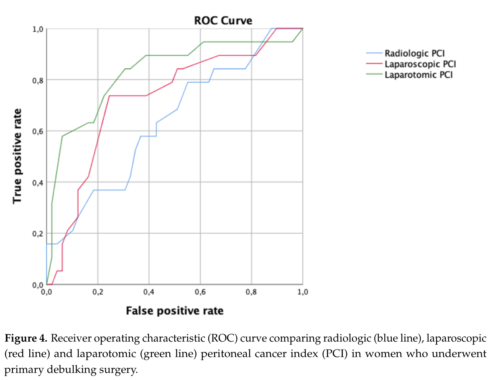
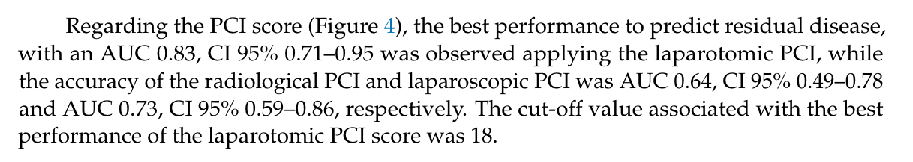
We end with a warning: the ROC curve and the AUC can give a misleading impression of the performance of an classifier on unbalanced data (i.e. for which the number of positive and negative observations are very different). For such classifiers, other diagnostics exist (e.g. the precision-recall curve), but we will not consider those here.
These course notes are made available under the Creative Commons BY-NC-SA 4.0 license.